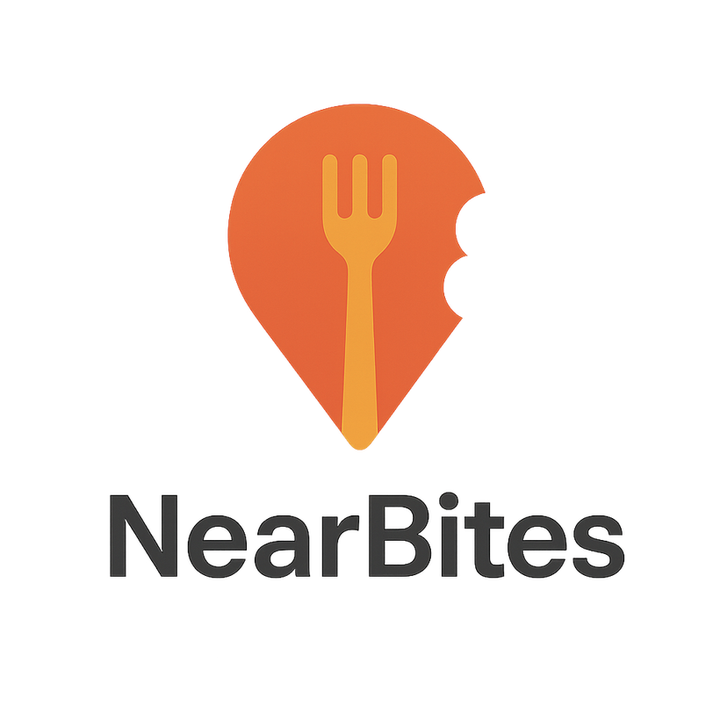
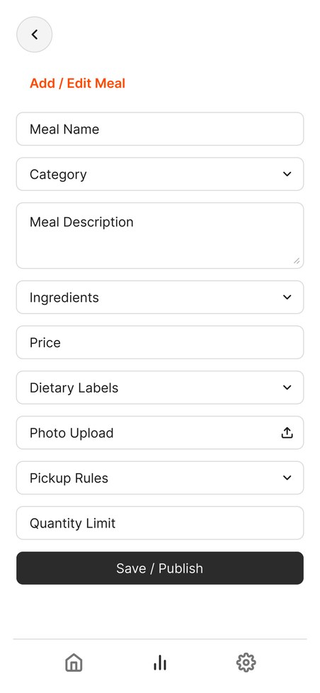
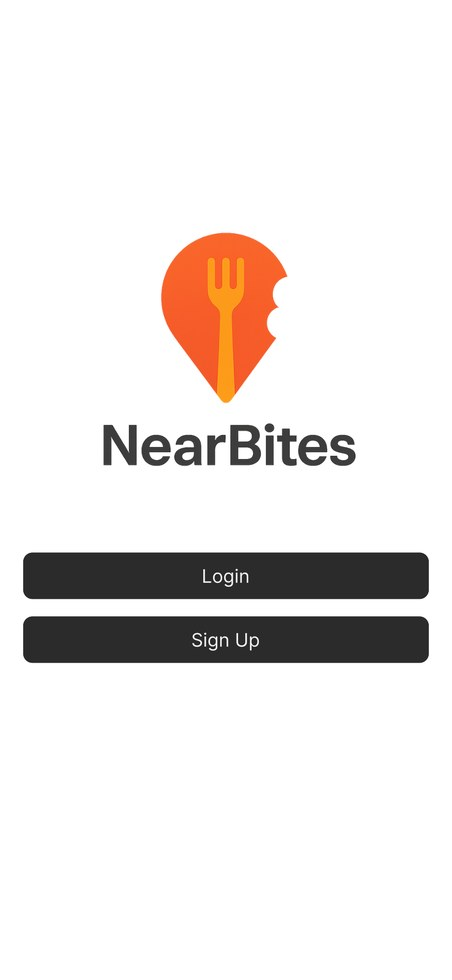
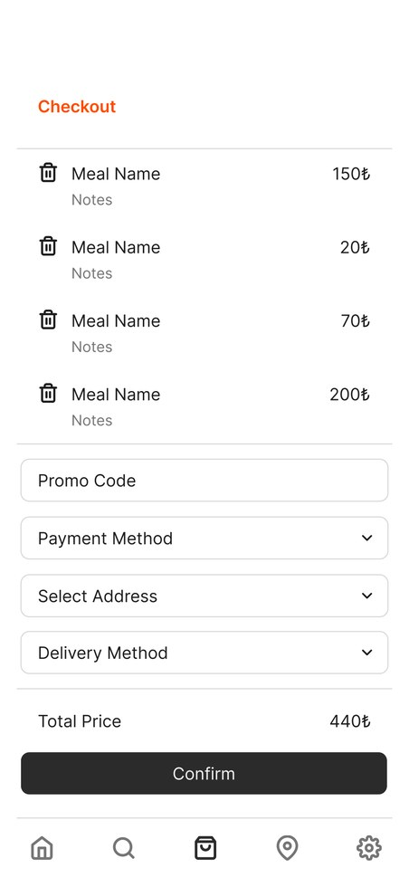
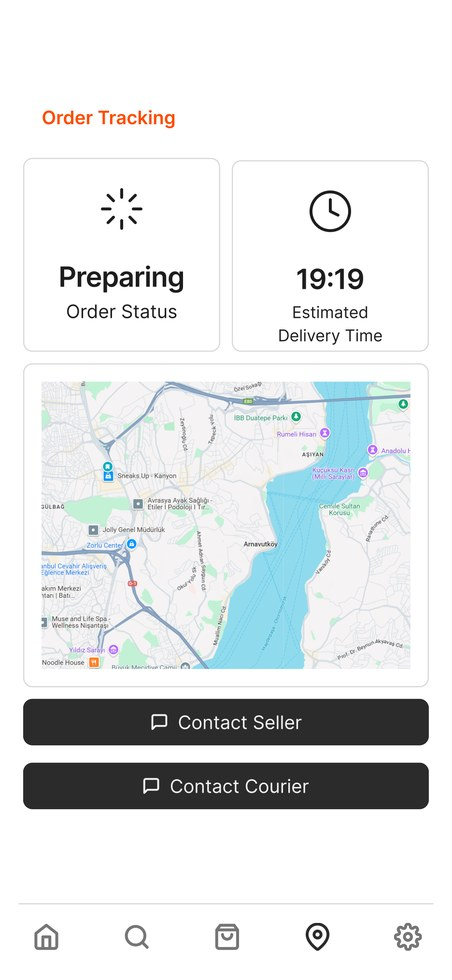
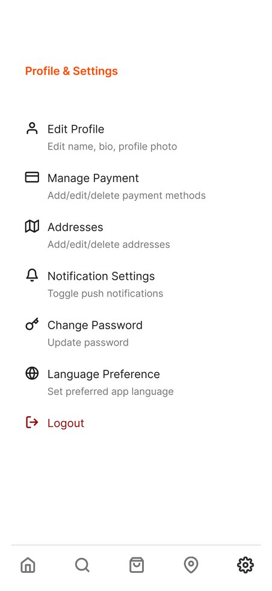

Community food exchange
A neighborhood-scale marketplace for surplus or intentionally prepared home-cooked meals.

NearBitesIE 48L HCI design project · Spring 2025
NearBites is a mobile HCI concept for connecting home cooks, local consumers, and flexible couriers. The prototype addresses two linked problems: high-cost delivery meals and household food waste.
Project frame
The product model treats home kitchens as micro-suppliers and makes the transaction usable for three different actors without collapsing them into one generic food-delivery flow.
A neighborhood-scale marketplace for surplus or intentionally prepared home-cooked meals.
Personas, hierarchical task analysis, role-specific system maps, Figma prototyping, and structured usability testing.
Buyer, seller, and courier interfaces covering browse, publish, checkout, track, deliver, review, and account-management tasks.
Role architecture
NearBites separates role complexity early: each role sees a dashboard and navigation model shaped around its most frequent decisions.
Find affordable meals, filter by dietary needs, inspect sellers, order, track, and review.

Publish meals, set quantity limits, manage active orders, update status, and view sales.
Accept delivery jobs, configure a working area, follow pickup/drop-off routes, and track earnings.
Design snippets
These snippets summarize the core design decisions behind the prototype: role routing, task success criteria, and the minimum information each screen must expose.
if user.role == "consumer":
start = "browse meals"
primary_action = "filter -> inspect -> checkout"
if user.role == "seller":
start = "seller dashboard"
primary_action = "add meal -> publish -> manage order"
if user.role == "courier":
start = "available jobs"
primary_action = "accept -> route -> deliver"consumer_order_time <= 60 sec
seller_listing_time <= 90 sec
courier_accept_time <= 30 sec
critical_success_rate >= 95%
average_error_rate < 1 error / task{
"meal": "name, image, price",
"seller": "rating, profile, hygiene cue",
"decision": "dietary labels, allergens, quantity",
"fulfillment": "pickup or delivery",
"feedback": "post-order rating"
}participants = 30
roles = { buyers: 14, sellers: 11, couriers: 5 }
tasks = [
"place filtered order",
"list and edit meal",
"update preparation status",
"accept delivery task",
"rate completed transaction"
]Prototype screens
The selected screens show the end-to-end loop: enter the platform, search for food, inspect a meal, checkout, track the order, and support seller/courier operations.

Simple sign-in and onboarding path for first-time users.
Filter by label, price, seller, and meal result quality.
Combines seller trust, meal description, price, notes, and cart action.

Payment, address, fulfillment method, promo, and order confirmation.

Order status, ETA, live map, and contact actions.
Seller-friendly publishing form for non-technical home cooks.

Profile, payment, addresses, notification, password, and language controls.
Map-based working area selection for flexible delivery coverage.
Evaluation
Testing focused on whether users could complete role-specific tasks with low friction and whether the design made the local food-sharing model understandable.
The redesign emphasized clearer dashboard feedback, more visible order status, and stronger separation between buyer, seller, and courier work. The courier workflow remained the most complex part, especially around availability and delivery acceptance.
The main design takeaway is that community food exchange needs more trust and clarity than a restaurant-ordering app. Users need to know who cooked the meal, what it contains, how it will be delivered, and what happens after purchase.